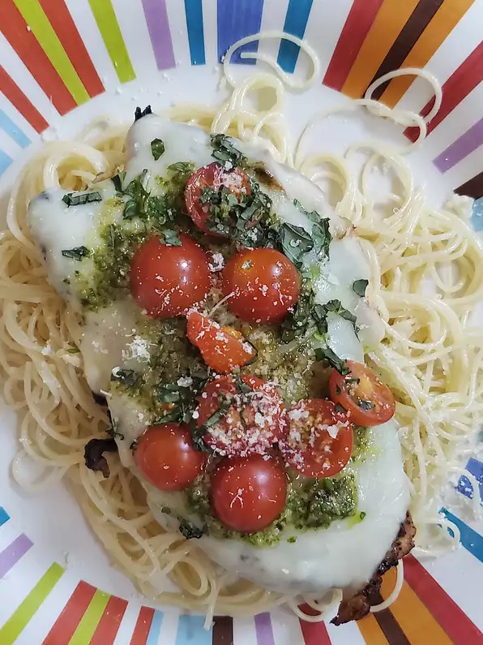

Grilled Chicken Margherita

Grilled marinated chicken, topped with melted mozzarella, pesto, and cherry tomatoes makes a delicious summer meal! Serve with rice or angel hair pasta.
What do you need?
How to make it?
- Gently pound chicken breasts into even thickness using the smooth side of a meat mallet, about 1/2 inch thick. Place chicken into a resealable plastic bag.
- Whisk together olive oil, balsamic vinegar, garlic, Italian seasoning, and salt in a small bowl. Pour over chicken, coat evenly, and marinate for 4 to 8 hours.
- Combine cherry tomatoes, basil, lemon juice, salt, and pepper in a small bowl.
- Preheat an outdoor grill for medium heat; lightly oil the grate.
- Remove chicken from marinade and grill with the lid closed for 4 minutes. Flip chicken and grill an additional 3 to 4 minutes. Top each breast with a slice of mozzarella cheese and 1 tablespoon of pesto, then top with cherry tomatoes. Close lid on grill and continue grilling until cheese is melted and chicken is no longer pink inside, about 3 more minutes. An instant-read thermometer inserted into the center should read at least 165 degrees F (74 degrees C). Using a spatula, carefully remove chicken to a serving platter.
Bon Appétit!
Go Back